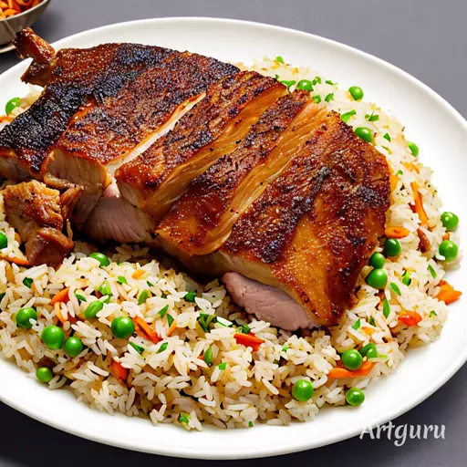
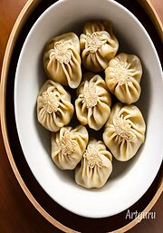

|  | |
||
| 海鮮鍋燒麵 | 茄汁起司義大利麵 | 照燒豬肉蓋飯 | 心得 |

起源：小籠湯包最早起源於南京，由當地一位名叫張宗潮的廚師所發明。後來，這道料理隨著張宗潮的弟子移居上海，在上海扎根並發揚光大。
名稱由來：小籠湯包的名字中，“小籠”和“湯包”都有其獨特的含義。其中，“小籠”是指包子用小籠蒸的，“湯包”是指包子內含有湯汁。
製作過程：小籠湯包的製作過程相對複雜，包括製作餡料、揉麵皮、包裝餡料、蒸煮等多個步驟。
享用方式：食客可以先蘸一點黑醋於湯包上，然後輕輕咬破湯包皮，吹一口，慢慢品嚐湯汁和餡料的美味，再搭配生薑絲，綜合了酸、辣、香的風味。
小籠湯包因其獨特的製作工藝和美味口感，已經成為中國和世界各地許多地方的知名美食之一，也成為了中國料理的代表之一。